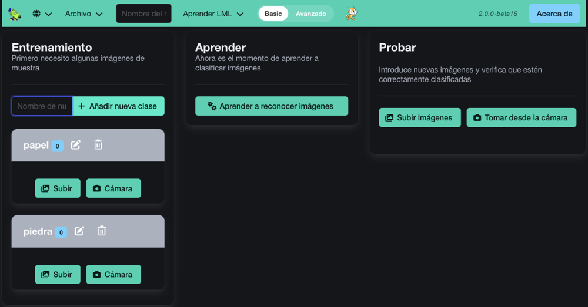
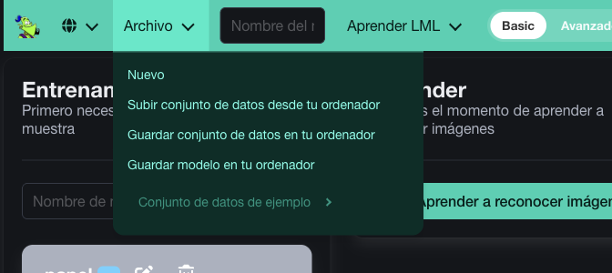
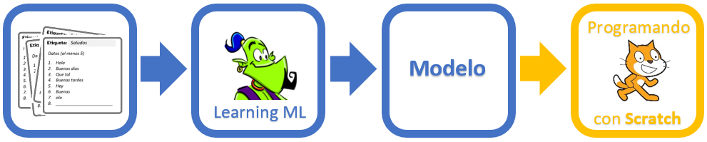
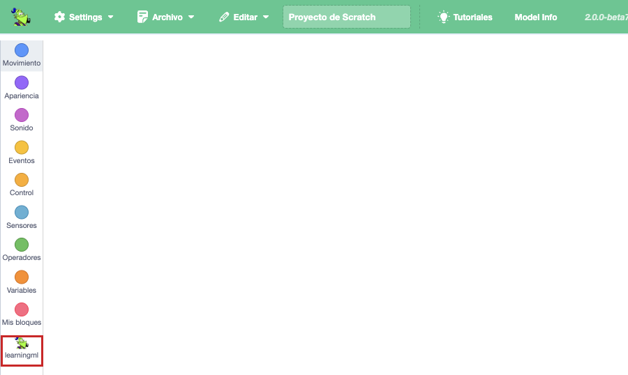

Enseña a la máquina: datos, sesgos e inteligencia artificial
S4 · Tu primer modelo
De qué va esta sesión
Hoy entrenas tu primer modelo de verdad. Vas a hacerlo con un ejemplo sencillo y rápido
para aprender la herramienta; los signos de la LSE vienen en la S5. Al final habrás recorrido
las tres fases enteras y habrás visto tu modelo funcionando dentro de un programa de
Scratch.
1. Entra en LearningML
LearningML es una herramienta web gratuita, creada por Juan David Rodríguez
García, pensada para iniciarse en el aprendizaje automático. Funciona en el navegador y
no necesita cuenta ni registro.
Abre el
editor de modelos de LearningML (ese enlace ya lo abre en español; si te sale en inglés,
busca el icono del globo terráqueo en la barra de arriba y elige Español).
Verás cuatro tarjetas para elegir qué quieres que reconozca tu modelo: texto,
imágenes, números o sonidos. Pulsa
«Reconocimiento de imágenes».
La pantalla tiene tres zonas, y son las tres fases de la S3
Zona
Para qué
Entrenamiento
Crear las clases y meter las imágenes de ejemplo.
Aprender
Un botón: «Aprender a reconocer imágenes».
Probar
Meter imágenes nuevas y ver si acierta.

Así se ve el editor con dos clases ya creadas. Fíjate en los botones
Subir y Cámara dentro de cada clase.
Dónde está el menú
Si la ventana del navegador es ancha, el menú aparece desplegado en la barra de arriba
(globo del idioma · Archivo · Nombre del modelo ·
Aprender LML · Basic / Avanzado · el gatito de Scratch).
Si la ventana es estrecha, todo eso se esconde detrás del botón ☰.
2. Práctica guiada: piedra, papel o tijera
Vamos a entrenar un modelo que distinga las tres jugadas de piedra-papel-tijera hechas con la
mano. Es rápido, se ve enseguida si funciona y os prepara para los signos de la S5.
Paso a paso
Pon nombre al proyecto. Escribe en el cuadro
«Nombre del modelo» de la barra de arriba: s4_piedra_papel_tijera.
Ese nombre será el del archivo cuando guardes.
Crea las clases. En la zona Entrenamiento, escribe
piedra en el cuadro «Nombre de nueva clase» y pulsa
«Añadir nueva clase». Repite con papel y tijera.
Aparecerán tres contenedores vacíos.
Consigue las imágenes. Cada clase tiene dos botones para añadirlas:
«Cámara» — si el ordenador tiene webcam. Se activa la cámara: haz
el gesto y pulsa «Captura» unas 15 veces, moviendo la
mano un poco entre foto y foto (más cerca, más lejos, girada, la otra mano). Al acabar,
«Cerrar».
«Subir» — si no hay webcam. Se abre el explorador de archivos y
eliges las fotos que ya tengas hechas. Puedes seleccionar varias a la vez
manteniendo pulsada la tecla Ctrl (o Mayúsculas para un bloque
seguido).
Haz lo mismo con papel y tijera. Unas 15 imágenes por clase.
Entrena. En la zona Aprender, pulsa
«Aprender a reconocer imágenes». Saldrá una ventana con una barra de
progreso. Cuanto más grande sea tu conjunto de imágenes, más tardará.
Prueba. En la zona Probar, mete una imagen
nueva con «Tomar desde la cámara» (o con
«Subir imágenes» si no tienes webcam) y mira el resultado: el modelo te
dirá el porcentaje de confianza de cada clase.
Guarda.Archivo →
«Guardar conjunto de datos en tu ordenador». Se descargará
s4_piedra_papel_tijera.json.

El menú Archivo. Las dos opciones que más vas a usar son
«Guardar conjunto de datos en tu ordenador» y «Subir conjunto de datos desde tu
ordenador».
Si tu ordenador no tiene webcam
No pasa nada: puedes hacer toda la unidad sin cámara. Solo cambia de dónde
salen las imágenes.
Haz las fotos con el móvil. Los mismos gestos, con el mismo cuidado:
fondo liso, buena luz, la mano bien centrada.
Súbelas a la tarea de Classroom desde el propio móvil. Ojo: a la tarea
de la asignatura, con tu cuenta del centro. No hace falta ninguna app ni ninguna cuenta
nueva.
Descárgalas en el ordenador del aula desde Classroom.
En LearningML, usa el botón «Subir» de cada clase en vez de «Cámara».
Para la zona Probar, el equivalente es «Subir imágenes» en lugar
de «Tomar desde la cámara». Guarda siempre unas cuantas fotos sin subirlas a ninguna
clase: son las que usarás para probar.
Cómo leer la confianza
El modelo nunca dice «esto es papel». Dice «estoy un 87 % seguro de que es papel».
Interpreta así el resultado:
Por encima del 80 %: el modelo lo tiene claro.
Entre el 60 % y el 80 %: va justo. Añade más imágenes y vuelve a entrenar.
Por debajo del 60 %: está adivinando. Faltan ejemplos o son demasiado parecidos entre sí.
Y si el modelo acierta con las tres clases pero siempre con la misma persona y el mismo
fondo, todavía no sabes si funciona: pídele a alguien de otro equipo que lo
pruebe.
Actividad 7 — Rompe tu propio modelo
Con el modelo ya entrenado, probadlo en estas cuatro situaciones y anotad el porcentaje de
confianza en cada una:
La misma persona, mismo sitio, mismo gesto que al entrenar.
Otra persona del equipo haciendo el mismo gesto.
La misma persona pero con la mano más lejos de la cámara.
La misma persona delante de un fondo distinto (una pared, una mochila…).
¿En cuál falla más? ¿Qué le añadiríais al conjunto de imágenes para arreglarlo? Apuntadlo:
os va a servir literalmente en la sesión siguiente.
3. Sacar el modelo a Scratch
Un modelo solo no hace nada; hay que usarlo dentro de un programa. LearningML trae su propia
versión de Scratch con bloques extra para eso.

Del modelo al programa
Con el modelo ya entrenado, pulsa en el editor el botón del gatito de
Scratch. Se abrirá
el
editor de programación en otra pestaña, con tu modelo ya cargado.
En la lista de categorías de bloques (columna de la izquierda), al final del
todo, verás una nueva: learningml.
Comprueba que el modelo correcto está cargado con el menú «Model Info»:
te dirá el nombre, el tipo de dato y las clases que reconoce.

Arriba, el menú Archivo y Model Info. A la
izquierda, la categoría learningml, la última de la lista.
Ojo: los bloques de learningml están en inglés
El resto de Scratch está en español, pero los bloques de la categoría
learningml aún no están traducidos. Estos son los dos que vas a usar:
Bloque
Qué hace
Classify item [ ]
Devuelve el nombre de la clase más probable de lo que le pases.
Confidence for item [ ]
Devuelve el porcentaje de confianza de esa respuesta.
Turn video [ON]
Enciende la cámara (FLIPPED = modo espejo). Solo si tienes webcam.
Video Image
La imagen que está viendo la cámara ahora mismo. Es lo que le pasarás a Classify item.
Current costume
El disfraz que lleva puesto el objeto. Es la alternativa a Video Imagecuando no hay cámara.
Dale a la bandera verde y ponte delante de la cámara haciendo los gestos. El gato irá
diciendo qué ve y con cuánta seguridad.
Guarda el proyecto:Archivo → Guardar en tu ordenador, y ponle de
nombre s4_piedra_papel_tijera.sb3.
Sin webcam: clasificar disfraces en vez de vídeo
Los bloques Turn video y Video Image necesitan cámara. Si no la
tienes, el modelo clasifica los disfraces del objeto, que es una forma de
trabajar prevista por la propia herramienta:
Pestaña Disfraces (arriba a la izquierda) → botón de
subir un disfraz → añade unas cuantas de tus fotos de prueba. Cada foto
será un disfraz.
El objeto irá pasando tus fotos una a una y diciendo qué ve en cada una. Se ve menos
espectacular que en directo, pero demuestra exactamente lo mismo: que el
modelo clasifica imágenes que no había visto al entrenar.
Current costume está en la categoría learningml, junto a
Video Image.
Un detalle que os va a salvar
El archivo .sb3 de LearningML Scratch guarda dentro el modelo,
no solo el código. Así que si guardáis el .sb3, al volver a abrirlo tendréis el
programa y el modelo funcionando, sin repetir el entrenamiento.
Entrega de la sesión
Subid a la tarea del reto en Google Classroom los dos archivos:
s4_piedra_papel_tijera.json y s4_piedra_papel_tijera.sb3.
Sin nombres ni apellidos en los archivos.